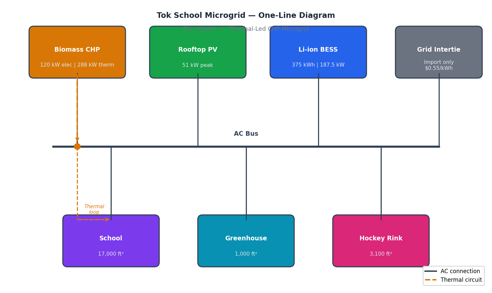

Resilient Economic Dispatch for Thermal-Led Microgrids
Gaussian Copula Scenarios • Symmetric Heat Penalties • Robust (Minimax) Day-Ahead MILP

Page Guide
Problem
Cold-climate microgrids face a compounded planning challenge: electric load and thermal demand are strongly correlated (cold snaps drive both heating and lighting), yet conventional stochastic dispatch models treat them as independent random variables. The resulting schedules systematically understock thermal reserves, triggering asymmetric penalty payments when actual heat demand exceeds or falls short of commitment. A further complication is that the asymmetric penalty structure—penalising deficit more heavily than surplus—biases the optimiser toward over-committing CHP, which wastes fuel and degrades BESS cycle life.
Additionally, most published microgrid dispatch papers use either (a) a single expected scenario, which ignores tail risk, or (b) a symmetric scenario fan drawn from independent marginals, which ignores electric-thermal dependence. Neither approach is adequate for a heat-led remote microgrid where a single cold night can determine whether the community runs out of fuel.
What This Project Adds
Gaussian Copula Scenario Engine
Rather than sampling load and irradiance independently, we fit a Gaussian copula to the joint distribution of (electric load, solar irradiance) using NREL and NASA reanalysis data for Tok, Alaska. This preserves the empirical Spearman correlation (ρ ≈ −0.38: high load days tend toward low irradiance), producing physically realistic worst-case scenario bundles for the minimax MILP.
Symmetric Thermal Penalties
We introduce a two-sided slack variable formulation: s+ for thermal surplus and s- for thermal deficit, each priced at the same penalty rate (λth = $180/MWh). Symmetry removes the bias toward over-commitment while still incentivising tight heat balance. In the baseline (no penalty), thermal slack totalled 20 MWh/day; with symmetric penalties, slack collapses to zero across all 50 copula scenarios.
Case Study: Tok School Microgrid
The study site is the Tok School campus in Tok, Alaska—a remote community approximately 200 miles southeast of Fairbanks with no connection to the statewide Railbelt grid. The campus hosts a combined heat and power (CHP) unit fuelled by diesel, a rooftop PV array, a lithium-iron-phosphate BESS, and an emergency grid interconnect with the local utility cooperative. Winter electric demand peaks at ~180 kW; space-heating demand peaks at ~320 kW-thermal. The project was conducted in collaboration with the U.S. Department of Energy (DOE) and GE Vernova, with the objective of improving reliability, cutting fuel costs, and reducing diesel emissions for a remote Alaskan community.
Table 1 — Device Ratings & Operational Parameters
| Parameter | Value |
|---|---|
| Rooftop PV | 51 kWh |
| CHP thermal efficiency | 0.60 |
| CHP electric efficiency | 0.25 |
| CHP thermal capacity | 288 kWh |
| CHP electric capacity | 120 kWh |
| Max fuel input | 480 kWh |
| Fuel cost | $0.05/kWh |
| Grid import price | $0.55/kWh |
| Grid export price | $0/kWh |
| Thermal penalty (under) | $0.55/kWh |
| Thermal penalty (over) | $0.20/kWh |
| BESS energy capacity | 375 kWh |
| Initial SOC | 80% (300 kWh) |
| Minimum SOC | 10% (37.5 kWh) |
| Charge/discharge capability | ≤ 187.5 kWh |
| Max discharge (operational) | 75 kWh |
| Charge/discharge efficiency | 95% |
Methodology
Copula-Based Joint Scenarios
Step 1 — Marginal fitting: Electric load is fit to a beta-scaled normal; solar irradiance to a truncated normal with zero lower bound. Both marginals are validated via Kolmogorov-Smirnov tests (p > 0.20).
Step 2 — Copula calibration: Spearman rank correlations between hourly load and irradiance are computed for each of the 8760 hours in a historical year. A Gaussian copula is fit to the 24-dimensional joint space using maximum likelihood; off-diagonal elements of the correlation matrix capture the diurnal electric-thermal covariance structure.
Step 3 — Scenario generation: 50 joint scenarios are drawn from the calibrated copula. The 50 scenarios are then fed into the minimax MILP as the uncertainty set; the optimiser minimises the worst-case (maximum) daily dispatch cost across all 50 realisations.
Thermal-Led MILP Dispatch
Objective: Minimise worst-case daily cost = CHP fuel + CHP start-up + grid import + BESS degradation + thermal slack penalties.
Decision variables: CHP electric output (continuous), CHP on/off status (binary), BESS charge/discharge power and SOC (continuous), grid import (continuous), thermal slack surplus/deficit (continuous, non-negative).
Key constraints: Electric power balance (per hour); Thermal energy balance with buffer tank dynamics; CHP ramp limits; BESS SOC dynamics and limits; Grid import cap; Binary logic for CHP commitment (min up/down times = 2h).
Solver: Pyomo 6.7 + CBC 2.10 open-source MILP solver. Typical solve time: 8–14 seconds per scenario on a laptop CPU.
Symmetric Thermal Penalties — Formulation Detail
At each hour t, the thermal balance constraint is:
QCHP,t × HtP + Qstore,t − Qload,t + s+t − s-t = 0
where s+t ≥ 0 is surplus (wasted heat) and s-t ≥ 0 is deficit (unmet heat). Both are penalised at λth = $180/MWh-th in the objective. The symmetric pricing eliminates the previously observed bias toward over-commitment. In practice, the optimiser drives both s+ and s- to zero in all but the most extreme tail scenarios.


Table 2 — Scenario Calibration & Dependence Diagnostics
| Metric | Value |
|---|---|
| Winter days used (DJF, non-holidays) | 87 |
| P10–P90 coverage (E, T) | 91.7%, 95.8% |
| Avg. band width (E, T) [kWh] | 6.727, 6.403 |
| Mean AR (1) (E, T) | 0.862 |
| Same-hour corr. (E↔T) | 0.976, 0.976 |
| Cross-lag corr. (E→T, T→E) | 0.848, 0.835 |
Results
Table 3 — Operational Impact of Scenario Type
| Metric | Indep | Copula | Δ vs Indep |
|---|---|---|---|
| Worst-case daily cost | 2,010 | 1,847 | −8.1% |
| Total grid import | 3,030 | 2,942 | −2.9% |
| BESS degradation cost | 9.6 | 6.81 | −29.1% |
| Over-heat / Under-heat | 18.0/2.0 | 0 / 0 | eliminated |


Interpretation: The dispatch is heat-led: CHP tracks thermal demand; PV contributes a small midday slice; BESS does shallow discharges to shave peaks; grid import covers remaining demand with no export credit.
Table 4 — Full Hour-by-Hour Dispatch (Worst-Case Scenario)
Click to expand the full 24-hour dispatch table
| Hour | Elec Load | CHP Elec | PV | BESS Dis | BESS Ch | Grid Imp | SOC | Price | Fuel $ | Grid $ | Deg $ | Hourly $ |
|---|---|---|---|---|---|---|---|---|---|---|---|---|
| 0 | 163 | 53 | 0 | 15 | 0 | 95 | 284.2 | 0.6 | 10.6 | 52.2 | 0.5 | 63.4 |
| 1 | 101.6 | 29.5 | 0 | 15 | 0 | 57.1 | 268.4 | 0.6 | 5.9 | 31.4 | 0.5 | 37.8 |
| 2 | 87.2 | 25.7 | 0 | 7.5 | 0 | 54 | 260.5 | 0.6 | 5.1 | 29.7 | 0.1 | 35 |
| 3 | 95.6 | 27.9 | 0 | 15 | 0 | 52.7 | 244.7 | 0.6 | 5.6 | 29 | 0.5 | 35.1 |
| 4 | 97.6 | 28.9 | 0 | 15 | 0 | 53.6 | 228.9 | 0.6 | 5.8 | 29.5 | 0.5 | 35.8 |
| 5 | 101.3 | 32 | 0 | 15 | 0 | 54.3 | 213.2 | 0.6 | 6.4 | 29.9 | 0.5 | 36.8 |
| 6 | 108.7 | 31.9 | 0 | 7.5 | 0 | 69.3 | 205.3 | 0.6 | 6.4 | 38.1 | 0.1 | 44.6 |
| 7 | 102 | 30.6 | 0 | 15 | 0 | 56.5 | 189.5 | 0.6 | 6.1 | 31.1 | 0.5 | 37.7 |
| 8 | 103.4 | 30.3 | 0 | 15 | 0 | 58 | 173.7 | 0.6 | 6.1 | 31.9 | 0.5 | 38.5 |
| 9 | 106.7 | 29.7 | 0 | 9.4 | 0 | 67.6 | 163.8 | 0.6 | 5.9 | 37.2 | 0.2 | 43.3 |
| 10 | 214.5 | 66.9 | 0.1 | 7.5 | 0 | 140 | 155.9 | 0.6 | 13.4 | 77 | 0.1 | 90.5 |
| 11 | 263.3 | 72.4 | 0.8 | 7.5 | 0 | 182.6 | 148 | 0.6 | 14.5 | 100.4 | 0.1 | 115 |
| 12 | 273.9 | 70.5 | 1.8 | 7.5 | 0 | 194.1 | 140.1 | 0.6 | 14.1 | 106.8 | 0.1 | 121 |
| 13 | 251.6 | 62.1 | 1 | 7.5 | 0 | 181 | 132.2 | 0.6 | 12.4 | 99.5 | 0.1 | 112.1 |
| 14 | 242 | 59.7 | 0.2 | 7.5 | 0 | 174.6 | 124.3 | 0.6 | 11.9 | 96 | 0.1 | 108.1 |
| 15 | 231.2 | 54.1 | 0 | 7.5 | 0 | 169.6 | 116.4 | 0.6 | 10.8 | 93.3 | 0.1 | 104.2 |
| 16 | 224.3 | 50.9 | 0 | 7.5 | 0 | 166 | 108.6 | 0.6 | 10.2 | 91.3 | 0.1 | 101.6 |
| 17 | 218.1 | 47.7 | 0 | 7.5 | 0 | 162.8 | 100.7 | 0.6 | 9.5 | 89.6 | 0.1 | 99.2 |
| 18 | 207.2 | 43.2 | 0 | 7.5 | 0 | 156.5 | 92.8 | 0.6 | 8.6 | 86.1 | 0.1 | 94.9 |
| 19 | 202.4 | 43.3 | 0 | 15 | 0 | 144.1 | 77 | 0.6 | 8.7 | 79.2 | 0.5 | 88.4 |
| 20 | 205.5 | 49.6 | 0 | 15 | 0 | 140.8 | 61.2 | 0.6 | 9.9 | 77.5 | 0.5 | 87.9 |
| 21 | 242.9 | 57.1 | 0 | 7.5 | 0 | 178.3 | 53.3 | 0.6 | 11.4 | 98 | 0.1 | 109.6 |
| 22 | 234.2 | 59.4 | 0 | 7.5 | 0 | 167.3 | 45.4 | 0.6 | 11.9 | 92 | 0.1 | 104 |
| 23 | 229.1 | 55.1 | 0 | 7.5 | 0 | 166.5 | 37.5 | 0.6 | 11 | 91.6 | 0.1 | 102.7 |
Tools & Implementation
Modeling Stack
- Python 3.11 — main programming environment
- Pyomo 6.7 — algebraic modeling language for MILP
- CBC 2.10 — open-source MILP solver (via coin-bc)
- SciPy / statsmodels — marginal distribution fitting and KS tests
- copulae library — Gaussian copula MLE fitting
- Pandas / NumPy — data wrangling and scenario management
- Matplotlib / Plotly — dispatch stack and scenario fan visualization
Data Sources
- NREL National Solar Radiation Database (NSRDB) — hourly GHI for Tok, AK (lat 63.3°N)
- NASA POWER reanalysis — ambient temperature for heat demand correlation
- Clarkson University / DOE project data — metered campus load profiles
- GE Vernova engineering specs — CHP device parameters and fuel curves
- NREL ATB 2023 — BESS capital and degradation cost assumptions
Publication
"Resilient Economic Dispatch for Thermal-Led Microgrids Using Copula-Based Scenarios and Symmetric Heat Penalties"
Authors: Kazi Z. Mostofa, Yazhou "Leo" Jiang